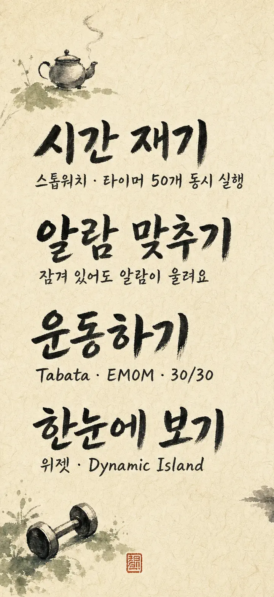
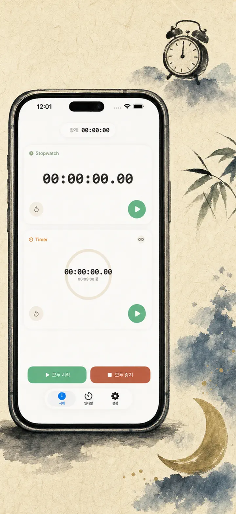
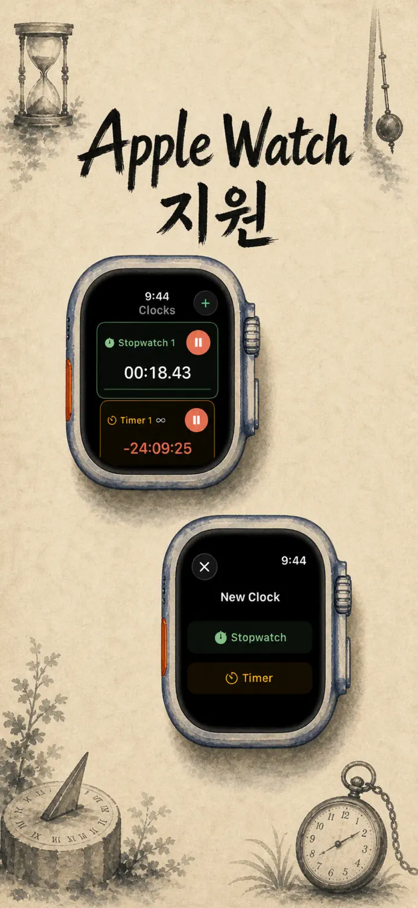
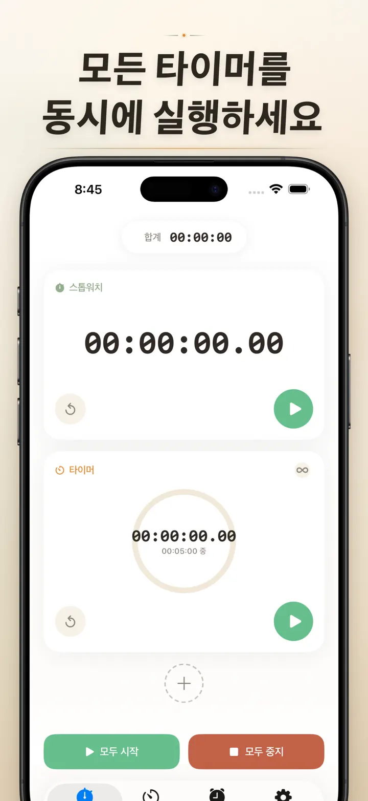
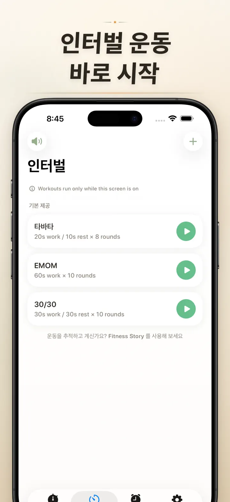
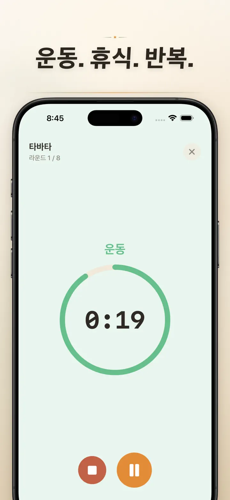
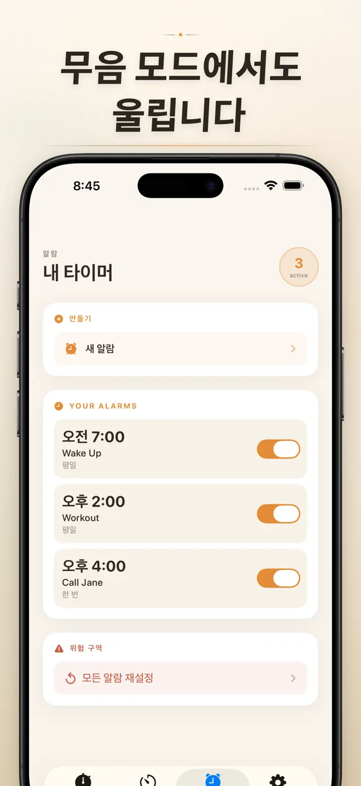

Timer on Me
타이머·알람·스톱워치·HIIT
날짜 알람 추가: 원하는 미래 날짜와 시간에 일회성 알람 설정, 반복 알람, 50개 타이머 동시 사용, HIIT·Tabata 운동 및 Apple Watch 지원.
App Store에서 다운로드
앱 정보
내 타이머는 iPhone, iPad, Apple Watch를 위한 멀티 타이머 & 스톱워치 앱입니다. 최대 50개의 타이머를 동시에 실행하고, HIIT, 타바타, 뽀모도로를 정확하게 측정하세요. 그리고 알람은 반드시 울립니다 — 앱을 닫거나 iPhone이 잠겨 있어도.
알람
- 기상 알람과 리마인더 알람, 라벨과 요일별 반복을 자유롭게 설정
- AlarmKit 기반 — iPhone이 잠겨 있거나 내 타이머가 닫혀 있어도 울립니다
- 스누즈 시간 선택 가능 (3 / 5 / 9 / 15 / 30분) 또는 스누즈 끄기
- 내장 벨소리에서 고르거나 직접 가져온 사운드 사용
- 전용 알람 탭에서 원터치로 켜고 끄기
인터벌 트레이닝 & 운동
- 타바타, EMOM, 30/30 프리셋 내장, 두 번 탭으로 바로 시작
- 사용자 정의 인터벌 편집기: 운동, 휴식, 라운드 수를 분·초 단위로 자유롭게 설정
- 전체 화면 트레이닝 모드, 단계별 색상 표시와 음소거 옵션
- 도중에 일시정지, 건너뛰기, 재시작해도 진행 상황은 그대로
Apple Watch
- 완전한 네이티브 watchOS 앱, 단순 동기화 표시가 아닙니다
- 손목에서 여러 스톱워치와 타이머를 동시에 실행
- 스톱워치는 100분의 1초 정밀도
- 전용 컴플리케이션으로 원터치 실행
- iPhone이 없어도 독립적으로 작동
타이머 50개 동시 실행
- 한 화면에서 최대 50개의 타이머와 스톱워치 관리
- 개별 또는 그룹으로 시작, 정지, 초기화
- 자동 반복으로 라운드 훈련이 간편
- 0을 지나도 계속 측정, 초과 시간 자동 추적
- 진행바 색상: 50%에서 노란색, 10%에서 빨간색
- 드래그 앤 드롭 정렬과 사용자 지정 이름
확실하게 울리는 알람
- AlarmKit: iPhone 잠금 중에도 앱이 닫혀 있어도 알람은 울립니다
- Dynamic Island과 라이브 액티비티로 한눈에 진행 확인
- 홈 화면 위젯: 소·중·대 3가지 크기
- 벨소리, 새소리, 빈티지 전화음 등 내장 알림음
- 탭 한 번으로 미리 듣기
- "화면 항상 켜기" 모드로 긴 세션 중 화면 어두워짐 방지
맞춤 설정 & 공유
- 소수, 합계, 퍼센트 표시를 취향대로 전환
- 자주 쓰는 설정을 저장·덮어쓰기, 다음엔 원터치로 불러오기
- 타이머 설정을 CSV, JSON, 일반 텍스트로 내보내기
- 동료, 학생, 코치와 공유
iPhone, iPad, Apple Watch 전체 지원
- 모든 화면 크기에 자동 대응
- iPad의 Split View 지원
- 34개 언어 지원
이럴 때 유용해요
- 수능, 공시, 토익 공부 + 뽀모도로 집중
- HIIT, 타바타, 크로스핏, 근력 운동
- 복싱, 태권도, 격투기 라운드
- 라면, 커피 드립, 계란 삶기, 오븐 요리
- 요가, 필라테스, 명상, 호흡법
- 아이 양치, 독서, 숙제 타이머
- 발표 연습, 악기 연습
- 수업, 회의, 워크숍
- 보드게임, 파티 게임
지금 내 타이머를 다운로드하고 1분 1초를 손에 쥐세요 — 헬스장, 사무실, 집 어디서든.
개인정보 처리방침: https://masawata.net/privacy-policy.html 이용약관: https://www.apple.com/legal/internet-services/itunes/dev/stdeula/
스크린샷






Timer on Me
날짜 알람 추가: 원하는 미래 날짜와 시간에 일회성 알람 설정, 반복 알람, 50개 타이머 동시 사용, HIIT·Tabata 운동 및 Apple Watch 지원.
App Store에서 다운로드